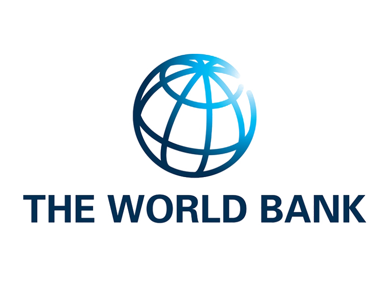

על המייסד
הגנת סייבר פרטית לאנשים בסיכון גבוה — בהובלת ד"ר ליאור טבנסקי

ד"ר ליאור טבנסקי הוא סמכות בינלאומית לעמידות סייבר, שנבחר למשימות רגישות שבהן דיסקרטיות, מהירות ותוצאות חשובים יותר מסיסמאות. שני עשורים של עבודה מעשית בישראל, אסיה, אירופה ואפריקה מחברים את ההובלה האסטרטגית שלו לניסיון תפעולי מוכח.
עקרונות פעולה
- נבחר למשימות רגישות המחייבות דיסקרטיות ברמת הנהלה.
- משלב שיקול דעת אסטרטגי עם ביצועי הגנת סייבר מנוסים בשטח.
- מספק ייעוץ רגוע ומכוון תוצאה למנהיגים בסביבות איומים מורכבות.
תחומי מומחיות מרכזיים
- שיקול דעת אסטרטגי תחת לחץ. ניתוח מנקודת מבט היריב עם תמיכה בקבלת החלטות בדרג הנהלה.
- מסגרות סייבר מוכחות. שימוש בשיטות ברמת מדינה שנבדקו על ידי סוכנויות ביטחון וחברות Fortune 500.
- אומנות מקצועית מדויקת. התאמת פתרונות מיטביים מתוך היכרות עמוקה ורחבה עם החזית הטכנולוגית.
- שיקול דעת של מצבי משבר. חשיבה של צוות אדום המשולבת בהבנה משפטית וברוגע ניהולי.
תקשורת והכרה ציבורית
הכתובת המועדפת לניתוח מחלוקות ריגול-סייבר, העימות בין ישראל לאיראן וסיכוני תשתיות קריטיות.
-
לצפייה בכתבה
The Washington Post
ניתוח על העימות הקיברנטי בין איראן לישראל.
-
לצפייה בכתבה
AP News
התייחסות למתקפת הסייבר על תעשיית הפלדה באיראן.
-
לצפייה בכתבה
Le Figaro
ציטוט בעקבות חשיפות פגסוס.
-
לצפייה בכתבה
The Jerusalem Post
פרופיל על פרשת פגסוס.
-
לצפייה בכתבה
la Repubblica
הערכת מצב על חזית הסייבר ישראל–איראן.
-
לצפייה בכתבה
RAI 1 – Codice
קטע מומחה בשידור; דף הפרק ב-RaiPlay.


לתאם ייעוץ
תאמו מפגש חסוי ישירות עם ד"ר טבנסקי. השתמשו בערוצי המסרים המאובטחים בתחתית העמוד או בקשו ערוץ חלופי.